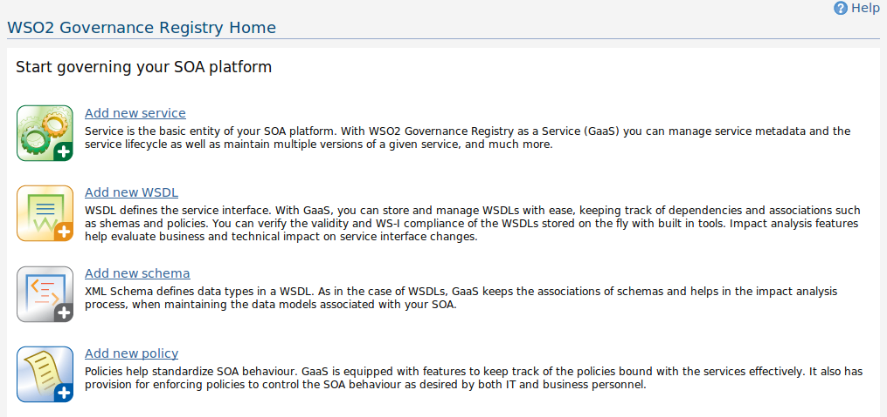
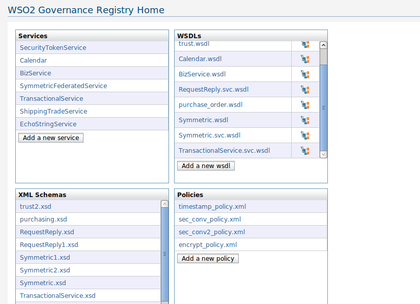

Governce Registry Home page provides a summary of the status of the SOA platform of your organization. It basically list the services, wsdls, schemas and policies added into the governance registry. You can add new services, wsdls, schemas and policies from the links provided in this page.As SOA adoption grows in an enterprise, SOA resources such as processes and policies must be securely managed. WSO2 Governance Registry addresses both design-time and runtime governance scenarios, to ensure compliance with corporate standards. It allows enterprise architects and developers to always keep track of the services being created and used within an SOA.
Figure1: The Governance Registry Home Page when no service, wsdl or schema is added
If you don't have added any services, WSDLs, schemas or policies, then you will be redirected to a page, introducing each of the resources. You can add your first service, WSDL, schema or the policy directly by clicking the title or the icons corresponding to the title.
Figure2: The Governance Registry Home Page